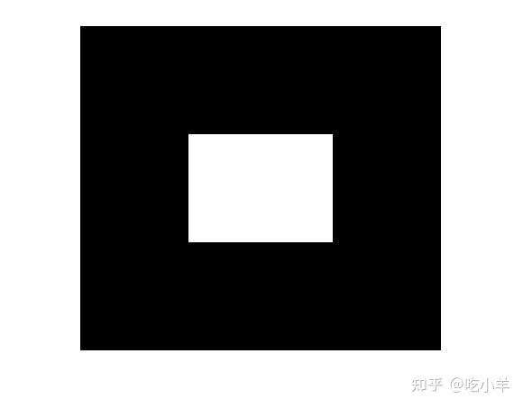
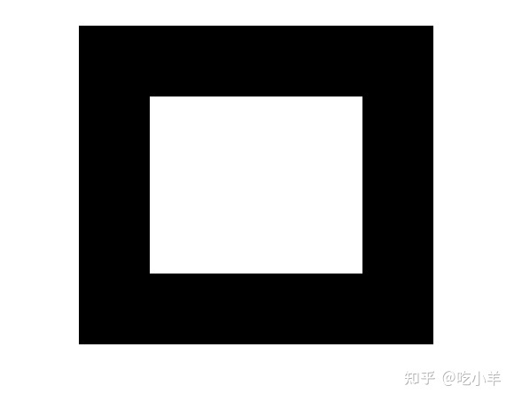
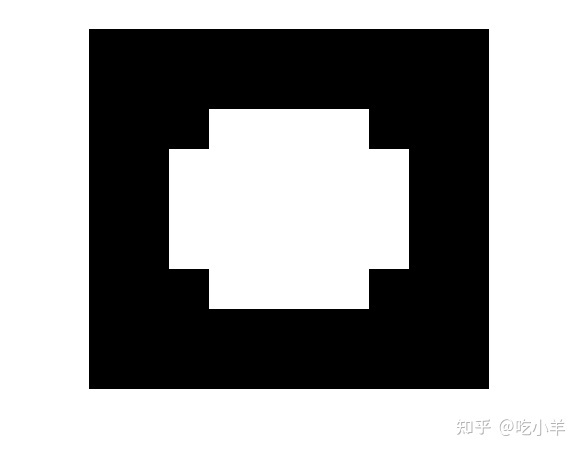

Home
本示例显示了如何使用imdilate函数来扩大图像。形态学膨胀操作可扩展或加厚图像中的前景对象。
创建一个简单的示例二进制图像，其中包含一个前景对象：图像中间为1的正方形区域。
BW = zeros(9,10);
BW(4:6,4:7) = 1
BW = 9×10
0 0 0 0 0 0 0 0 0 0
0 0 0 0 0 0 0 0 0 0
0 0 0 0 0 0 0 0 0 0
0 0 0 1 1 1 1 0 0 0
0 0 0 1 1 1 1 0 0 0
0 0 0 1 1 1 1 0 0 0
0 0 0 0 0 0 0 0 0 0
0 0 0 0 0 0 0 0 0 0
0 0 0 0 0 0 0 0 0 0
imshow(imresize(BW,40,'nearest'))

创建一个结构元素，用于imdilate。要扩展几何对象，通常需要创建与对象形状相同的结构元素。
SE = strel('square',3)
SE =
strel is a square shaped structuring element with properties:
Neighborhood: [3x3 logical]
Dimensionality: 2
膨胀图像，将图像和结构元素传递给imdilate。请注意，膨胀是怎样将1的层级加到前景对象的所有侧面。
BW2 = imdilate(BW,SE)
BW2 = 9×10
0 0 0 0 0 0 0 0 0 0
0 0 0 0 0 0 0 0 0 0
0 0 1 1 1 1 1 1 0 0
0 0 1 1 1 1 1 1 0 0
0 0 1 1 1 1 1 1 0 0
0 0 1 1 1 1 1 1 0 0
0 0 1 1 1 1 1 1 0 0
0 0 0 0 0 0 0 0 0 0
0 0 0 0 0 0 0 0 0 0
imshow(imresize(BW2,40,'nearest'))

为了进行比较，创建一个形状不同的结构元素。使用新的结构元素来扩展原始图像。
SE2 = strel('diamond',1);
BW3 = imdilate(BW,SE2);
imshow(imresize(BW3,40,'nearest'))

======================================================================
我的测试结果及程序
下面是我测试的代码：

注：本文根据MATLAB官网内容修改而成。